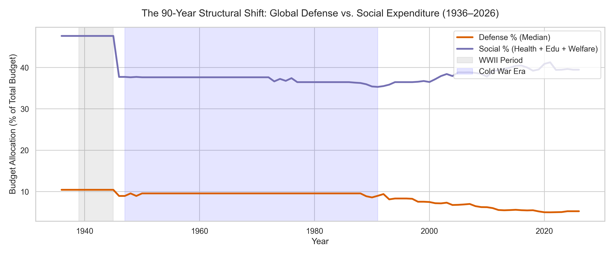
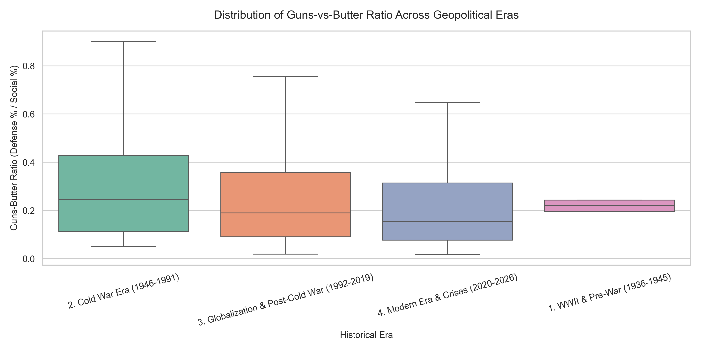
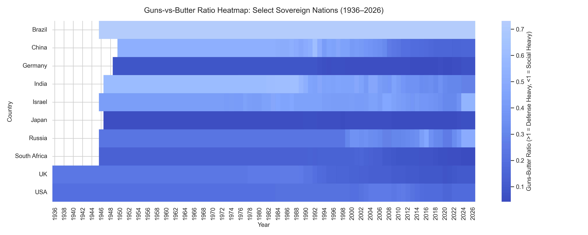
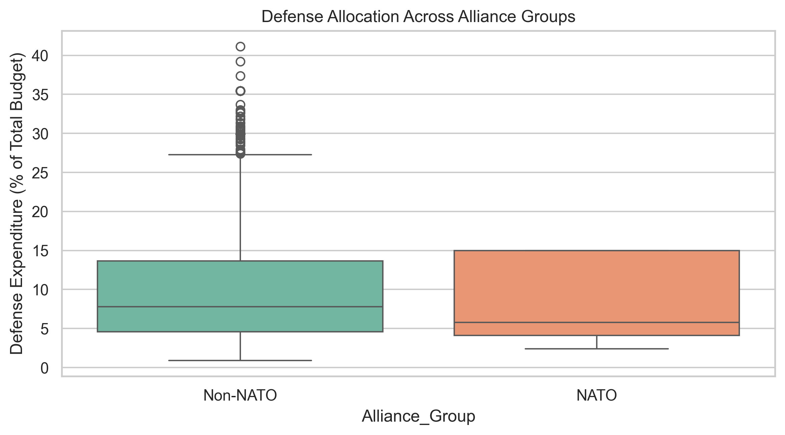
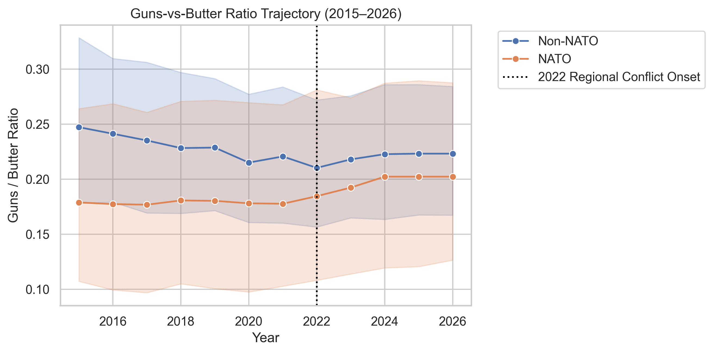
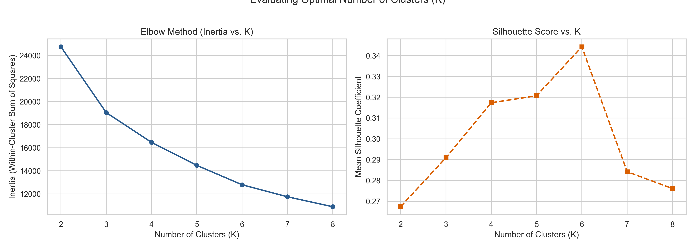
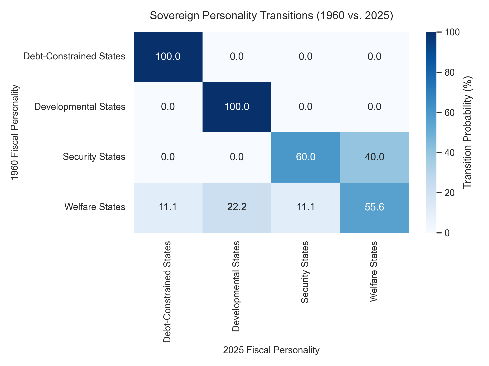

The Cost of Debt: How Sovereign Spending Shifted Over 90 Years
A Data Journalism Case Study on Geopolitical Crises, Fiscal Personalities, and Guns vs. Butter Trade-Offs (1936–2026)
Author: Data Journalism & Econometrics Team | Date: August 21, 2026
Executive Summary
Over the past nine decades, sovereign nations have navigated a fundamental trade-off: allocating public capital between national security ("Guns") and socio-economic investment ("Butter"). Analyzing 3,654 country-year observations across 45 nations spanning 1936 to 2026 reveals how global crises, debt service burdens, and alliance structures dictate fiscal priorities.
1. Data Integrity & Standardization
All national expenditure figures were standardized across nine functional spending categories: Defense (\(D\)), Health, Education, Social Welfare (\(S\)), Interest Debt Servicing (\(I\)), Infrastructure, Agriculture, State Transfers, and Administration.
Global Panel Coverage
Data continuity spans 91 years. Baseline coverage begins in 1936 with major economies and expands globally following WWII.
Figure 1: Global Budget Data Availability Heatmap (1936–2026)
Functional Budget Verification
Each sovereign budget was verified to ensure functional percentage allocations sum to 100%:
Figure 2: Distribution of Total Budget Percentage Sums across Panel
2. Long-Run Expenditure Trends (1936–2026)
Global Defense vs. Social Expenditure
Global median defense allocations fell from wartime highs (\(\approx 10.5\%\)) to a baseline of \(5.1\%\) in recent decades, while social expenditures (Health, Education, Protection) stabilized between \(36\%\) and \(41\%\).

Figure 3: The 90-Year Structural Shift: Global Defense vs. Social Expenditure (1936–2026)
Country Trajectories
National budget strategies exhibit clear institutional choices:
Germany & Japan: Low defense spending (\(\approx 2.5\% - 4.5\%\)) paired with elevated social allocations (\(\approx 48\% - 54\%\)).
United States: Elevated social spending (\(\approx 45\% - 52\%\)) alongside defense spikes during post-9/11 operations (\(\approx 12\%\)).
India: A secular decline in defense allocation from \(15.0\%\) mid-century to under \(8.0\%\) post-2020.
Figure 4: Divergent Fiscal Trajectories: Defense vs. Social Allocations
The Guns-vs-Butter Ratio
The Guns-vs-Butter Index measures defense relative to social investment:
The median ratio declined from \(\approx 0.25\) during the Cold War to \(\approx 0.15\) in the modern era.

Figure 5: Distribution of Guns-vs-Butter Ratio Across Geopolitical Eras

Figure 6: Guns-vs-Butter Ratio Heatmap: Select Sovereign Nations (1936–2026)
Log Social Expenditure Baseline OLS
An OLS model (\(N = 3,654\), \(R^2 = 0.998\)) establishes near-unitary elasticity (\(\beta_{\text{log\_budget}} = 0.9984\), \(p < 0.001\)) between overall spending scale and social allocations.
Security commitments shape defense allocations. NATO members average \(9.08\%\) defense allocations (median \(5.80\%\)), whereas Non-NATO nations average \(10.03\%\) (median \(7.80\%\)) with maximum allocations reaching \(41.20\%\).

Figure 7: Defense Allocation Across Alliance Groups
Table 1: Summary Statistics: Defense Allocation by Alliance Status
Alliance Group
Count
Mean
Std Dev
Median
IQR
Max
NATO
834
9.08%
5.56%
5.80%
4.10% – 15.00%
23.30%
Non-NATO
2730
10.03%
7.20%
7.80%
4.60% – 13.70%
41.20%
Post-2022 Regional Conflict Dynamics
Following regional conflicts in 2022, NATO member states reversed long-term spending declines, increasing their Guns-vs-Butter ratio from \(0.184\) (2022) to \(0.202\) (2024–2026).

Figure 8: Guns-vs-Butter Ratio Trajectory (2015–2026)
Chow Tests for Structural Breaks
Chow testing confirms structural regime changes in spending priorities following geopolitical shocks:
Table 2: Chow Test Results for Geopolitical and Economic Shocks
Event
F-Statistic
p-value
Structural Break?
1991 USSR Dissolution
29.5773
< 0.0001
Yes
2008 Financial Crisis
33.7524
< 0.0001
Yes
Post-2022 Interaction Regression
An interaction model (\(N = 540\), \(R^2 = 0.960\)) shows post-2022 rearmament effects:
Post-2022 NATO Main Effect (Is_Post_2022): \(\beta = +0.0182\) (\(p < 0.001\)).
Post-2022 Non-NATO Interaction: \(\beta = -0.0297\) (\(p < 0.001\)), indicating rearmament acceleration was concentrated among NATO members.
\(K\)-Means clustering across all 9 allocation dimensions identified \(K=4\) as the optimal number of fiscal archetypes.

Figure 9: Evaluating Optimal Number of Clusters (K): Elbow Method & Silhouette Score
Fiscal Personality Profiles
Developmental States: Elevated Defense (\(\approx 23.5\%\)) and Education (\(\approx 17.2\%\)).
Security States: High Infrastructure (\(\approx 15.4\%\)) and Administration (\(\approx 15.3\%\)).
Debt-Constrained States: High Social Welfare (\(\approx 21.3\%\)) and Interest Servicing (\(\approx 13.1\%\)).
Welfare States: Focused public investment in Education, Health, and Social Welfare.
Figure 10: Fiscal Personality Profiles: Budget Fingerprints across Clusters
Transition Matrix (1960 vs. 2025)
Markov state tracking reveals path dependency: Debt-Constrained and Developmental states maintained \(100\%\) persistence between 1960 and 2025, while \(40\%\) of Security States transitioned into Welfare States.

Figure 11: Sovereign Personality Transitions (1960 vs. 2025)
Pruned Exact Linear Time (PELT) algorithms identified structural shift years across key nations:
United States: Break points detected in 2000 (Post-9/11 defense expansion) and 2015 (Bipartisan Budget Act / sequester adjustments).
Germany: Break points detected in 1993 (Post-unification fiscal restructuring) and 2023 (Zeitenwende defense fund expansion).
United Kingdom: Break points identified in 1989, 1995, and 2010 (Austerity measures following the Global Financial Crisis).
India: Break points identified in 1986, 1991 (Balance of payments crisis & economic liberalization), 2001, and 2021.
Figure 12: Structural Regime Shifts in Budget Allocations
USA Defense Allocation Forecast (2026–2030)
An \(\text{ARIMA}(1,1,1)\) model projects US defense spending to stabilize near \(9.15\%\) through 2030, with an \(80\%\) confidence interval between \(8.15\%\) and \(10.18\%\).